청소년상담사-2급(2교시)(구) (2016-03-26 기출문제)
1과목: 진로상담
1. 진로상담의 필요성으로 옳은 것을 모두 고른 것은?
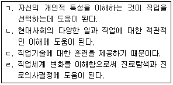
- ㄱ, ㄴ
- ㄷ, ㄹ
- ㄱ, ㄴ, ㄷ
- ㄱ, ㄴ, ㄹ
- ㄴ, ㄷ, ㄹ
(정답률: 알수없음)

2. 청소년 진로상담의 목표로 옳은 것을 모두 고른 것은?
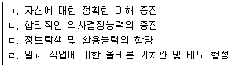
- ㄱ,ㄴ,ㄷ
- ㄱ,ㄴ,ㄹ
- ㄱ,ㄷ,ㄹ
- ㄴ,ㄷ,ㄹ
- ㄱ,ㄴ,ㄷ,ㄹ
(정답률: 알수없음)
3. 크럼볼츠(J. Krumboltz) 이론을 활용한 진로상담의 목표로 옳은 것은?
- 흥미코드에 맞는 직업이나 선택지에 대한 정보를 찾는다.
- 과제접근 기술을 학습한다.
- 상담을 통해 직업 자기개념을 분명하게 이해한다.
- 자신의 욕구와 직업 강화요인 간의 조화여부를 파악한다.
- 타협상황을 고려한 진로의사결정 능력을 기른다.
(정답률: 알수없음)
4. 인간중심 진로상담의 원리에 관한 설명으로 옳지 않은 것은?
- 진로발달을 위한 내담자의 내적 성장을 촉진한다.
- 상담자의 태도를 기법보다 더 중요하게 여긴다.
- 개인의 성격, 행동특성 등을 객관적인 심리검사로 측정하고 평가하는 것을 강조한다.
- 심리적 진단을 보조적 방법으로 사용한다.
- 상담자는 공감적 이해, 무조건적인 존중과 수용, 진실성과 같은 기본적인 태도를 갖는다.
(정답률: 알수없음)
5. 다음에서 진로 동기를 촉진하기 위해 활용되는 인지행동 접근의 '사고 오류'에 해당하는 것은?
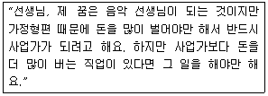
- 점쟁이 예언
- 독심술
- 낙인찍기
- 강박적 부담
- 정신적 여과
(정답률: 알수없음)
6. 수퍼(D. Super)의 진로발달이론에서 제시한 재순환에 관한 설명으로 옳은 것은?
- 재순환은 생물학적 발달의 과정 및 속도와 일치한다.
- 성인기의 진로위기는 변화하는 환경에 적응하도록 재순환을 촉진한다.
- 같은 조직에서 다른 영역의 직무를 새로 수행하는 것은 재순환으로 보지 않는다.
- 재순환은 15∼24세에 한정된다.
- 진로발달은 비가역적이기 때문에 재순환이 발생하지 않는다.
(정답률: 알수없음)
7. 학자와 주요 이론(개념)의 연결이 옳은 것은?
- 로우(A. Roe): 5가지 위계단계에 따른 8가지 직업군집분류
- 하렌(V. Harren): 합리형, 의존형, 회피형의 진로의사결정유형
- 갓프레드슨(L. Gottfredson): 흥미, 성역할, 결과기대에 따른 타협우선순위
- 긴즈버그(E. Ginzberg), 엑설래드(S. Axelrad), 헐마(J. Herma): 환상기, 잠정기, 현실기의 단계에 따른 진로선택의 발달과정
- 터크만(B. Tuckman): 타율성, 상호관계, 자기결정의 단계 구분에 따른 중ㆍ고등학생의 진로발달
(정답률: 알수없음)
8. (가)-(나)에 들어갈 내용을 순서대로 바르게 연결한 것은?
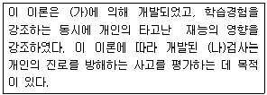
- 오하라(R. O'Hara)-진로사고
- 크럼볼츠(J. Krumboltz)-진로신념
- 반두라(A. Bandura)-진로사고
- 스키너(B. Skinner)-진로신념
- 타이드만(D. Tiedeman)-진로사고
(정답률: 알수없음)
9. 이론과 진로심리검사가 바르게 연결된 것을 모두 고른 것은?
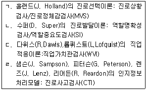
- ㄱ, ㄷ
- ㄱ, ㄹ
- ㄴ, ㄷ
- ㄱ, ㄴ, ㄹ
- ㄴ, ㄷ, ㄹ
(정답률: 알수없음)
10. 수퍼(D. Super)가 제안한 진로성숙의 개념에 관한 설명으로 옳지 않은 것은?
- 진로성숙의 정도는 진로발달의 연속선상에서 개인이 도달한 위치를 의미한다.
- 진로성숙은 진로 발달과업에 성공적으로 대처하기 위한 개인의 심리적 자원이다.
- 진로적응은 성인에게 진로성숙이라는 개념을 적용하기 위해 제안된 것이다.
- 진로성숙은 내적 지표인 만족과 외적 지표인 충족의 영역으로 구분된다.
- 진로성숙은 진로계획, 직업탐색, 의사결정, 직업세계에 대한 지식 등이 하위요인으로 구성된다.
(정답률: 알수없음)
11. 샘슨(J. Sampson), 피터슨(G. Peterson), 렌즈(J. Lenz), 리어든(R. Reardon)의 인지정보처리모델에서 진로의사결정과정의 주기를 순서대로 바르게 연결한 것은?
- 분석-평가-의사소통-종합-실행
- 분석-의사소통-종합-실행-평가
- 평가-분석-의사소통-종합-실행
- 의사소통-분석-평가-종합-실행
- 의사소통-분석-종합-평가-실행
(정답률: 알수없음)
12. 다위스(R. Dawis)와 롭퀴스트(L. Lofquist)의 직업적응이론에 관한 설명으로 옳지 않은 것은?
- 개인이 직업 환경과의 조화를 이루기 위해 역동적 적응과정을 경험한다.
- 성격은 성격양식과 성격구조로 설명된다.
- 개인과 직업 환경의 조화를 6가지 유형으로 제안한다.
- 성격양식은 민첩성, 속도, 리듬, 지속성과 같은 방식으로 작동된다.
- 지속성은 환경과의 상호작용을 얼마나 오랫동안 유지하는지를 의미한다.
(정답률: 알수없음)
13. 직업 대안들을 배제하는 방식의 진로의사결정 과정을 제안한 학자는?
- 브룸(V. Vroom), 미첼(T. Mitchell)
- 미첼(T. Mitchell), 하렌(V. Harren)
- 티버스키(A. Tversky), 브룸(V. Vroom)
- 하렌(V. Harren), 갓프레드슨(L. Gottfredson)
- 갓프레드슨(L. Gottfredson), 티버스키(A. Tversky)
(정답률: 알수없음)
14. 사회인지진로이론에서 제안한 진로상담 전략이 아닌 것은?
- 자기효능감 촉진하기
- 제외시킨 진로대안 확인하기
- 진로장벽에 대한 인식 확인하기
- 결과에 대한 비현실적 기대 확인하기
- 개인-환경 부조화에 대한 적응양식 평가하기
(정답률: 알수없음)
15. 다음에서 설명하고 있는 진로상담모형은?
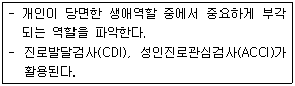
- 진로발달평가상담(C-DAC)모형
- 스포케인(Spokane)상담모형
- 직업적응이론(TWA)상담모형
- 가이스버스(Gysbers)상담모형
- 사회인지진로이론(SCCT)상담모형
(정답률: 알수없음)
16. 진로상담이론과 주요 개념의 연결이 옳은 것을 모두 고른 것은?
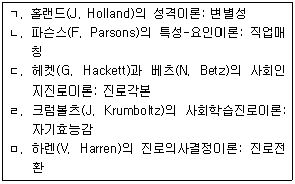
- ㄱ, ㄴ
- ㄱ, ㅁ
- ㄴ, ㄷ
- ㄴ, ㅁ
- ㄷ, ㄹ
(정답률: 알수없음)
17. 로우(A. Roe)의 욕구이론에 관한 설명으로 옳은 것을 모두 고른 것은?
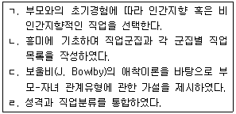
- ㄱ, ㄷ
- ㄱ, ㄴ, ㄹ
- ㄱ, ㄷ, ㄹ
- ㄴ, ㄷ, ㄹ
- ㄱ, ㄴ, ㄷ, ㄹ
(정답률: 알수없음)
18. 흥미를 탐색하기 위해 개발된 검사를 모두 고른 것은?
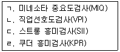
- ㄱ, ㄹ
- ㄴ, ㄷ
- ㄱ, ㄴ, ㄷ
- ㄴ, ㄷ, ㄹ
- ㄱ, ㄴ, ㄷ, ㄹ
(정답률: 알수없음)
19. 적성 평가에 관한 설명으로 옳지 않은 것은?
- 관찰법으로는 적성을 파악할 수 없다.
- 워크넷의 청소년적성검사는 중학생에게 적용할 수 있다.
- 적성을 파악하는 방법으로 표준화된 적성검사를 사용할 수 있다.
- 운동조절 적성, 손운동속도 적성과 같은 하위 요인이 일반적성에 해당한다.
- 적성을 알아보기 위해 일반적성검사와 특수적성검사를 활용할 수 있다.
(정답률: 알수없음)
20. 브라운(D. Brown)의 가치중심적 진로접근 모형을 활용한 진로상담에서 상담자가 유의해야 할 사항이 아닌 것은?
- 면접과정에서 정서적인 문제를 주의 깊게 살펴본다.
- 양적 및 질적인 방법으로 가치들을 평가한다.
- 직업탐색 프로그램을 활용하여 내담자의 가치와 진로를 연결시켜준다.
- 가치의 우선순위가 매겨진 증거를 확인한다.
- 내담자의 과거경험에 대한 재해석과 재귀인에 유용한 구체적 자료를 살펴본다.
(정답률: 알수없음)
21. 다위스(R. Dawis)와 롭퀴스트(L. Lofquist)의 직업적응이론에서 분류한 다음의 진로적응 양식은?
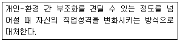
- 유연성(flexibility)
- 반응성(reactiveness)
- 적극성(activeness)
- 회피성(avoidance)
- 수동-공격성(passive-aggressiveness)
(정답률: 알수없음)
22. 사비카스(M. Savickas)의 구성주의진로이론에 관한 설명으로 옳은 것은?
- 진로적응성은 성인기 진로발달에만 해당한다.
- 개인의 주관적 경험과 진로문제는 생애주제와 관련이 있다.
- 진로적응도를 '계획된 우연'의 맥락에서 태도, 신념, 역량으로 구성한다.
- 생애주제는 자녀, 학생, 시민, 배우자, 부모 등과 같은 역할로 구분된다.
- 진로적응도를 자원과 전략에 따라 호기심, 인내심, 융통성, 낙관성, 위험감수로 구분한다.
(정답률: 알수없음)
23. 하렌(V. Harren)의 진로의사결정유형에 따라 내담자를 옳게 분류한 것은?
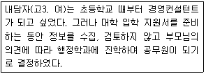
- 의존형
- 즉흥형
- 합리형
- 회피형
- 불안형
(정답률: 알수없음)
24. 홀랜드(J. Holland)의 성격이론에 관한 설명으로 옳지 않은 것은?
- 개인과 환경은 여섯 가지 유형 중의 하나로 분류될 수 있다.
- 실재형은 기계, 도구, 동물에 관한 체계적인 조작활동을 좋아한다.
- 일치성이란 사람의 직업적 흥미가 직업 환경과 어느 정도 맞는지를 의미한다.
- 미네소타만족질문지(MSQ)를 활용하여 개인의 흥미와 직업환경 간의 일치 정도를 평가한다.
- 육각형은 개인 내의 일관성 정도를 나타내는 도형이다.
(정답률: 알수없음)
25. 다음은 과학교사가 되고 싶은 고등학생 내담자의 직업선호도검사 결과이다. 이를 바탕으로 진로상담을 진행할 때 옳지 않은 것은?
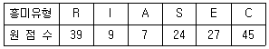
- 내담자의 직업포부가 과학교사이므로 일치성이 높음을 고려한다.
- 관습형에 속하는 직업이 내담자의 흥미와 잘 맞는 것으로 판단한다.
- 일관성 있는 흥미 유형을 보여주고 있음을 고려한다.
- 흥미 유형이 뚜렷하게 드러난 것으로 판단하고 의사결정을 조력한다.
- 공인회계사, 은행원 등과 같은 직업에 대해서 어떻게 생각하는지 탐색해 본다.
(정답률: 알수없음)
26. 갓프레드슨(L. Gottfredson)이론의 진로선택에 관한 설명으로 옳은 것은?
- 개인의 흥미, 능력, 가치관과 현실세계의 타협과정이다.
- 진로선택은 개인과 환경 간의 상호작용에서 일어난 학습경험으로 이루어진다.
- 진로선택 과정은 축소와 조정을 통해 진로포부가 변화하는 과정이다.
- 성격유형과 성역할의 기준으로 직업인지지도를 구성하였다.
- 선택모형은 목표선택, 활동선택, 미래직업선택으로 설명된다.
(정답률: 알수없음)
27. 갓프레드슨(L. Gottfredson)의 진로발달이론에서 제시한 진로포부발달 단계가 아닌 것은?
- 내적 자아 확립단계
- 서열 획득단계
- 성역할 획득단계
- 사회적 가치 획득단계
- 안정성 확립단계
(정답률: 알수없음)
28. 내담자가 활용한 진로정보의 종류가 아닌 것은?
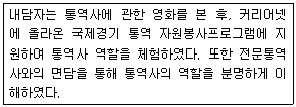
- 컴퓨터 기반 정보 시스템 자료
- 출판 자료
- 직접적인 경험 자료
- 시청각 자료
- 인터뷰 자료
(정답률: 알수없음)
29. 윌리암슨(E. Williamson)이 제안한 상담과정의 6단계 중 1, 2, 3단계에 해당하는 내용을 고르고, 순서대로 연결한 것은?
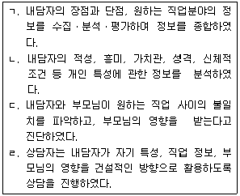
- ㄱ-ㄴ-ㄷ
- ㄱ-ㄴ-ㄹ
- ㄴ-ㄱ-ㄷ
- ㄴ-ㄷ-ㄹ
- ㄷ-ㄱ-ㄹ
(정답률: 알수없음)
30. 진로 심리검사 결과 해석에 관한 설명으로 옳은 것을 모두 고른 것은?
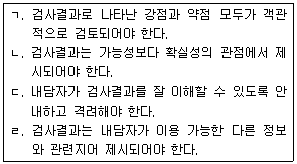
- ㄱ, ㄴ
- ㄷ, ㄹ
- ㄱ, ㄴ, ㄷ
- ㄱ, ㄷ, ㄹ
- ㄴ, ㄷ, ㄹ
(정답률: 알수없음)
2과목: 집단상담
31. 집단유형과 특성에 관한 설명으로 옳지 않은 것은?
- 집단지도는 정보제공 및 전달을 목적으로 한다.
- 집단상담은 완벽한 사회장면을 제공함으로써 대인관계 기술을 습득하도록 한다.
- 집단상담은 개인의 성장과 변화를 목적으로 한다.
- 집단치료는 심각한 신경증적 갈등을 경험하는 집단원을 주요 대상으로 한다.
- 집단상담은 집단원 간의 상호작용을 통해 집단원의 감정 및 행동양식을 탐색한다.
(정답률: 알수없음)
32. 개인상담과 비교하여 집단상담이 더 적합한 경우를 모두 고른 것은?
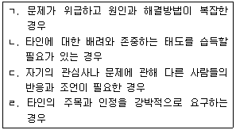
- ㄱ, ㄴ
- ㄱ, ㄷ
- ㄴ, ㄷ
- ㄴ, ㄹ
- ㄷ, ㄹ
(정답률: 알수없음)
33. 집단응집력에 관한 설명으로 옳지 않은 것은?
- 의사소통의 양과 질에 영향을 미친다.
- 집단만족도에 영향을 미친다.
- 집단원의 참석률에 영향을 미친다.
- 집단의 지지와 수용이 집단응집력에 영향을 미친다.
- 집단원 간의 부정적 감정표현은 응집력과는 관계가 없다.
(정답률: 알수없음)
34. 정화(카타르시스)에 관한 설명으로 옳지 않은 것은?
- 감정표출과 관련된 감정을 다룬다.
- 감정표출 후 관련된 인지를 다룬다.
- 감정표출은 신체적 증상으로 나타날 수 있다.
- 감정표출의 치료적 효과는 집단원의 문화적 배경에 따라 다르다.
- 집단에서의 감정표출 경험을 일상생활에서 그대로 적용해 보도록 권유한다.
(정답률: 알수없음)
35. 집단상담자의 초기단계 과제에 관한 설명으로 옳지 않은 것은?
- 집단구조화가 필요할 경우 집단원에게 집단목표와 진행절차를 설명한다.
- 집단원이 개인적 목표를 설정하도록 협력하여 돕는다.
- 집단 참여에 대한 불안과 두려움을 수용하고 공감한다.
- 집단원과 갈등하는 사람의 특성에 대해 집단원이 자세히 이야기하도록 한다.
- 집단상담자는 집단규범을 명시적 혹은 암시적으로 제시한다.
(정답률: 알수없음)
36. 집단상담의 종결단계에 관한 설명으로 옳은 것을 모두 고른 것은?
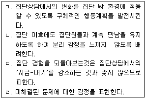
- ㄱ, ㄷ
- ㄱ, ㄹ
- ㄴ, ㄷ
- ㄴ, ㄹ
- ㄷ, ㄹ
(정답률: 알수없음)
37. 작업단계에서 치료적 요소를 촉진하기 위한 방법으로 옳지 않은 것은?
- 침묵에 대한 무조건적 수용
- 집단원의 새로운 행동에 대한 수용
- 낙담한 집단원에 대한 격려
- 집단상담자의 자기개방에 대한 모델링
- 집단원의 모순적 행동에 대한 직면
(정답률: 알수없음)
38. 정신분석적 집단상담에 관한 설명으로 옳은 것을 모두 고른 것은?
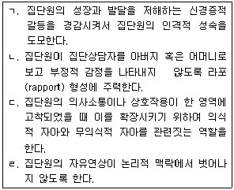
- ㄱ, ㄴ
- ㄱ, ㄷ
- ㄴ, ㄷ
- ㄴ, ㄹ
- ㄷ, ㄹ
(정답률: 알수없음)
39. 로저스(C. Rogers)의 인간중심 집단에서 치료적 요소에 관한 설명으로 옳지 않은 것은?
- 잠재력에 대한 신뢰
- 수용적 분위기 형성
- 주관적 경험세계에 대한 민감성
- 자신의 감정이나 태도에 대한 진솔함
- 자기비밀에 대한 무조건적 개방
(정답률: 알수없음)
40. 행동주의 집단상담에 관한 설명으로 옳은 것은?
- 바람직한 행동 습득을 위해 역할연습과 숙제를 활용한다.
- 초기에 추상적인 삶의 가치를 포함하는 내용으로 행동계약한다.
- 목표하는 행동을 단번에 강화함으로써 행동을 조형(shaping)한다.
- 문제행동 분석 및 관리에 초점을 두며 상담관계 형성을 중요하게 생각하지 않는다.
- 집단원이 집단규범을 스스로 깨닫도록 조력한다.
(정답률: 알수없음)
41. 합리적 정서행동(REBT) 집단상담에 관한 설명으로 옳지 않은 것은?
- 집단원의 부정적 행동을 유발시킨 사건에 대해 체계적으로 분석하고 변화시킨다.
- 역할연습과 자기주장과 같은 기법을 사용하고 이를 숙제로 내준다.
- 집단원의 대화 중에서 당위적 언어를 찾아내도록 하여 비합리적 생각과 합리적 생각을 구별하도록 가르친다.
- 집단원의 비합리적 신념을 능동적이고 지시적으로 도전하여 논박한다.
- 두려움 때문에 하지 못하던 행동을 해봄으로써 자신의 생각이 비합리적이었음을 깨닫도록 한다.
(정답률: 알수없음)
42. 교류분석 집단상담에 관한 설명으로 옳은 것을 모두 고른 것은?
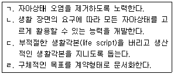
- ㄱ
- ㄱ, ㄷ
- ㄴ, ㄹ
- ㄴ, ㄷ, ㄹ
- ㄱ, ㄴ, ㄷ, ㄹ
(정답률: 알수없음)
43. 게슈탈트 집단상담에 관한 설명으로 옳지 않은 것은?
- 인간생활을 형태의 점진적 형성과 소멸의 과정으로 본다.
- 집단원의 행동을 다른 사람과의 상호작용의 결과로 보고 다른 집단원의 행동을 모델로 삼아 변화하도록 한다.
- 집단 내에서의 활동과 상호작용이 집단상담자에 의해 주도적으로 진행된다.
- 지금-여기, 접촉 등이 주요 개념이다.
- 뜨거운 자리, 순회하기 등의 기법을 사용한다.
(정답률: 알수없음)
44. 현실치료 집단상담에 관한 설명으로 옳은 것을 모두 고른 것은?
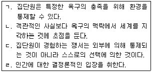
- ㄱ, ㄴ
- ㄴ, ㄹ
- ㄷ, ㄹ
- ㄱ, ㄴ, ㄷ
- ㄱ, ㄴ, ㄷ, ㄹ
(정답률: 알수없음)
45. 다음 설명에 해당하는 집단상담 이론은?
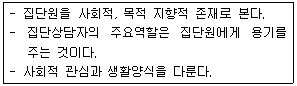
- 실존주의 집단상담
- 게슈탈트 집단상담
- 교류분석 집단상담
- 인간중심 집단상담
- 개인심리학 집단상담
(정답률: 알수없음)
46. 집단상담자의 태도 및 자질에 관한 설명으로 옳지 않은 것은?
- 자신의 강점과 약점에 대해 수용한다.
- 집단원의 복지에 대해 관심을 갖는다.
- 심리적 에너지를 보충하기 위해 노력한다.
- 검증되지 않은 기법과 운영방식을 집단에서 실험한다.
- 집단원의 다양한 문화적 가치에 대해 수용적 태도를 취한다.
(정답률: 알수없음)
47. 집단상담자의 기술 적용에 관한 설명으로 옳은 것을 모두 고른 것은?
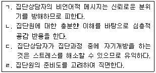
- ㄱ, ㄴ
- ㄱ, ㄷ
- ㄴ, ㄷ
- ㄴ, ㄹ
- ㄱ, ㄴ, ㄹ
(정답률: 알수없음)
48. 다음 설명에 해당하는 기법은?
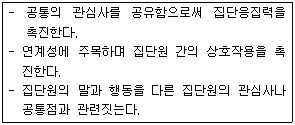
- 해석하기
- 연결하기
- 반영하기
- 명료화하기
- 재구조화하기
(정답률: 알수없음)
49. 다음 사례에서 적용한 상담기법은?
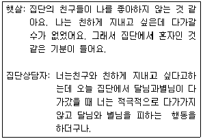
- 해석하기
- 직면하기
- 반영하기
- 명료화하기
- 역전이 현상다루기
(정답률: 알수없음)
50. 청소년 집단상담을 준비할 때 고려사항으로 옳은 것은?
- 초등학생인 경우 한 회기에 90분 이상 진행될 수 있도록 준비한다.
- 고등학생 집단상담을 할 때 집단원의 참여 동기와 욕구에 대한 조사보다는 보호자의 기대에 대한 조사를 우선해야 한다.
- 집단상담 진행과 관련한 상담자의 정보를 제공하여야 한다.
- 집단원간 친밀감 형성을 위해 사전면접은 집단으로 실시하여야만 한다.
- 심각한 정서장애를 가진 학생을 집단상담에 참여하도록 권유한다.
(정답률: 알수없음)
51. 침묵에 대한 집단상담자의 대처 행동으로 옳지 않은 것은?
- 집단원이 내면화 작업으로 침묵한다면, 적극적인 참여를 요구하기보다는 집단 중에 함께 나누고 싶은 마음을 전한다.
- 회기 초기에 비생산적일 수 있다고 생각되는 침묵이 지속되면 집단상담자는 집단원의 적극적인 반응을 유도하여야 한다.
- 침묵의 의미가 무엇인지 탐색해 볼 수 있는 기회를 제공한다.
- 매회기마다 활동을 사용하여 침묵이 발생하지 않도록 한다.
- 집단원이 집단에 대한 신뢰감이 생기지 않아 침묵하는 경우, 자발적으로 참여할 때까지 기다린다.
(정답률: 알수없음)
52. 문제 상황에 대한 집단상담자의 대처행동으로 옳지 않은 것은?
- 충고하는 집단원에게 자신의 충고행동 동기를 탐색해 보게 한다.
- 자신의 이야기를 사실 중심으로 하면 그 사실과 관련된 자신의 감정을 표현하도록 한다.
- 주지화의 내용은 정서적인 면과 연결짓지 않는다.
- 독점하는 집단원에게 자신의 모습을 볼 수 있도록 피드백 한다.
- 상처 싸매기를 하는 집단원에게는 미해결 감정이 있는지 살펴보게 한다.
(정답률: 알수없음)
53. 집단원의 권리로 옳지 않은 것은?
- 집단에 참여할 권리
- 집단을 이탈할 권리
- 솔직하게 개방할 권리
- 개인정보를 보호받을 권리
- 집단에 관한 정보를 안내 받을 권리
(정답률: 알수없음)
54. 청소년의 특성을 고려한 집단상담으로 옳지 않은 것은?
- 청소년들은 모호한 집단상황에 부담을 느끼므로 회기 내용을 구체화하여 진행하는 것이 좋다.
- 청소년은 또래의 영향을 많이 받기 때문에 집단원의 피드백을 적극 활용한다.
- 개방적 집단의 경우 응집성 형성과 발달에 유익하다.
- 일반적으로 구조적 집단상담은 역동적인 활동을 많이 하므로 활동적인 청소년에게 좋다.
- 진로와 학습을 주제로 하는 집단상담에서는 교육이나 지도 형태로 진행하는 것이 좋다.
(정답률: 알수없음)
55. 집단상담을 평가하는 방법을 모두 고른 것은?
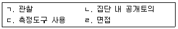
- ㄱ, ㄴ
- ㄴ, ㄷ
- ㄱ, ㄷ, ㄹ
- ㄴ, ㄷ, ㄹ
- ㄱ, ㄴ, ㄷ, ㄹ
(정답률: 알수없음)
56. 청소년 집단상담에 관한 내용으로 옳지 않은 것은?
- 게임이나 활동을 가능한 활용하지 않는다.
- 남성과 여성의 공동상담자 형태는 집단원에게 성역할 모델을 제공한다.
- 비자발적인 집단원은 집단에 대한 불편감을 가지고 있으므로 그 감정을 나눌 수 있는 기회를 갖도록 돕는다.
- 연령이 낮을수록 부모나 보호자에게 집단의 목적과 진행과정, 절차 등에 대해 알려 주어야 한다.
- 일반적으로 청소년 집단상담은 성인 집단상담에 비해 집단상담자의 적극적인 역할과 자세가 요구된다.
(정답률: 알수없음)
57. 청소년 집단상담의 특징으로 옳은 것을 모두 고른 것은?
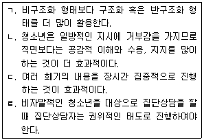
- ㄱ, ㄴ
- ㄷ, ㄹ
- ㄱ, ㄴ, ㄷ
- ㄱ, ㄴ, ㄹ
- ㄱ, ㄴ, ㄷ, ㄹ
(정답률: 알수없음)
58. 집단상담자의 윤리적 지침으로 옳은 것은?
- 동료의 부당한 압력도 치료적 요인이므로 압력이 일어나는 분위기를 허용한다.
- 집단상담자는 기법 사용 훈련을 받지 않았어도 집단원에게 도움이 되는 기술이라면 적극 활용해야 한다.
- 특정 집단원의 욕구가 집단 내에서 충족될 수 없다면 집단원에게 다른 전문적 의뢰를 제안해야 한다.
- 집단원의 개인정보는 집단원이 공유할 수 있도록 제공해야 한다.
- 기관 의뢰 집단상담을 진행할 때, 집단 진행과 관련된 기관의 정책과 윤리지침을 집단원에게 알려서는 안 된다.
(정답률: 알수없음)
59. 집단상담자의 지도성에 관한 설명으로 옳지 않은 것은?
- 집단원의 자율성에 대한 요구를 고려하여 집단을 운영한다.
- 달성해야 할 과업이 많을 때 일반적으로 집단상담자의 주도성을 높이는 것이 좋다.
- 집단의 크기가 클 때 일반적으로 집단상담자의 주도성을 높이는 것이 좋다.
- 집단상담 기간이 짧을 때 일반적으로 집단상담자의 주도성을 높이는 것이 좋다.
- 집단상담자의 운영 방식에 대한 집단원의 불만은 집단과정 중에 다루지 않는다.
(정답률: 알수없음)
60. 피드백 기법을 사용할 때 효과적인 지침으로 옳지 않은 것은?
- 집단원이 준비가 되었을 때 한다.
- 변화 가능한 것에 대해 한다.
- 구체적으로 한다.
- 부정적인 행동에 대해서는 비판적으로 해야 한다.
- 집단원이 행동한 직후에 한다.
(정답률: 알수없음)
3과목: 가족상담
61. 일반체계 이론에 관한 설명으로 옳지 않은 것은?
- 체계는 부분의 합보다 크다.
- 버터란피(L. Bertalanffy)의 이론이다.
- 열린 체계에서는 네겐트로피가 낮다.
- 체계는 열린 체계와 닫힌 체계로 구분할 수 있다.
- 유기체의 동귀결성(equifinality)에 대하여 설명한다.
(정답률: 알수없음)
62. 사이버네틱스(cybernetics) 이론에 관한 설명으로 옳은 것은?
- 베이슨(G. Bateson)이 개발한 이론이다.
- 피드백 망(feedback loops)이라는 제어체계가 있다.
- 정적 피드백은 일탈을 경감시킨다.
- 항상성은 이야기치료에서 유래하였다.
- 이중구속에 관한 이론이다.
(정답률: 알수없음)
63. 가족규칙에 관한 설명으로 옳지 않은 것은?
- 건강한 규칙에서는 개인보다 가족이 우선시된다.
- 가족규칙은 의사소통 방식 등과 연관된다.
- 가족의 정체성 구분은 가족을 지배하는 규칙에 근거한다.
- 나쁜 규칙은 가족체계를 건강하게 유지하는 데 방해가 된다.
- 인간 외적 요소나 조건이 중심이 되는 규칙은 좋은 규칙이라 할 수 없다.
(정답률: 알수없음)
64. 생태체계 이론에 관한 설명으로 옳지 않은 것은?
- 브론펜브레너(U. Bronfenbrenner)가 개발한 이론이다.
- 인간은 성장하면서 환경과 역동적 관계를 갖는다.
- 외적체계는 발달하는 개인에게 직접적으로 관련되는 여건이다.
- 거시체계는 미시체계, 중간체계, 외적체계를 포함한다.
- 생태학적 전이(ecological transition)는 삶의 전 영역에서 일어난다.
(정답률: 알수없음)
65. 가족상담 과정에서 종결에 관한 설명으로 옳지 않은 것은?
- 가족이 상담에 대한 동기를 상실하면 종결하는 것이 바람직하다.
- 가족구성원이 상담을 통해 습득한 대처방법이나 행동방식을 계속 유지하는 경우 종결할 수 있다.
- 상담효과가 없다고 판단했을 때는 종결을 고려할 수 있다.
- 상담 초기에 설정한 상담목표가 이루어진 경우 종결할 수 있다.
- 종결에 대한 가족의 욕구보다 지속에 대한 상담자의 의지가 존중되어야 한다.
(정답률: 알수없음)
66. 가족상담 기술에 관한 설명으로 옳은 것을 모두 고른 것은?
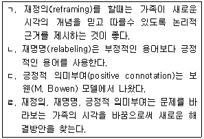
- ㄱ, ㄴ
- ㄷ, ㄹ
- ㄱ, ㄴ, ㄹ
- ㄱ, ㄷ, ㄹ
- ㄱ, ㄴ, ㄷ, ㄹ
(정답률: 알수없음)
67. 다음의 가족상담 윤리를 나타내는 개념은?
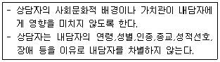
- 다양성 존중
- 고지된 동의
- 이중관계 금지
- 자기결정권 존중
- 치료 종결이나 의뢰에 대한 책임
(정답률: 알수없음)
68. 후기 가족상담의 이론적 기초에 관한 설명으로 옳지 않은 것은?
- 상담자의 '알지 못한다(not knowing)'는 자세를 강조한다.
- 1차 사이버네틱스와 체계론적 관점을 기초로 발전되었다.
- 사회구성주의는 언어가 어떻게 세계와 신념을 구성하는가에 초점을 둔다.
- 협력언어체계 모델에서 안데르센(T. Andersen)은 '반영팀'이라는 접근을 발전시켰다.
- 상담자와 내담자의 관계는 평등하다고 본다.
(정답률: 알수없음)
69. 보웬(M. Bowen)의 가족상담에 관한 설명으로 옳은 것은?
- 가계도 개발에 아이디어를 제공하였다.
- 핵가족 체계를 중심으로 가족문제를 분석한다.
- 완전한 자아분화가 상담의 목표이다.
- 자아분화 수준이 낮은 사람은 스트레스를 받을 때 더 유연하고 현명하게 사고한다.
- 원가족과의 단절은 자아분화 수준을 높인다.
(정답률: 알수없음)
70. 구조적 가족상담에서 하위체계에 관한 설명으로 옳은 것은?
- 개인의 하위체계는 중복되지 않는다.
- 부부 하위체계는 원가족의 영향을 받지 않는다.
- 건강한 부모-자녀 하위체계는 위계가 없다.
- 건강한 가족은 부모 하위체계와 부부 하위체계가 기능적으로 분리되지 않는다.
- 형제자매 하위체계에서는 성, 역할, 권력 등에 따라 위계가 형성된다.
(정답률: 알수없음)
71. 밀란(Milan) 모델에 관한 설명으로 옳은 것을 모두 고른 것은?
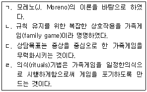
- ㄱ, ㄴ
- ㄴ, ㄷ
- ㄱ, ㄷ, ㄹ
- ㄴ, ㄷ, ㄹ
- ㄱ, ㄴ, ㄷ, ㄹ
(정답률: 알수없음)
72. 해결중심 단기치료에 관한 설명으로 옳은 것을 모두 고른 것은?
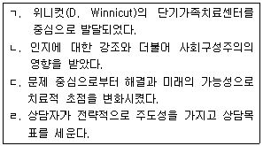
- ㄱ, ㄴ
- ㄱ, ㄹ
- ㄴ, ㄷ
- ㄱ, ㄴ, ㄷ
- ㄴ, ㄷ, ㄹ
(정답률: 알수없음)
73. 경험적 가족상담에 관한 설명으로 옳지 않은 것은?
- 내담자의 주관적인 체험과 경험을 중시한다.
- 가족의 특유한 갈등과 행동양식에 맞는 경험을 제공한다.
- 자존감과 효과적 의사소통의 상호관련을 중시한다.
- 대표 학자 중에 휘태커(C. Whitaker)가 있다.
- 가족의 역기능 현상을 제거하여 안정된 현재 상황에 머무르게 한다.
(정답률: 알수없음)
74. 부부 상담에 관한 설명으로 옳은 것을 모두 고른 것은?
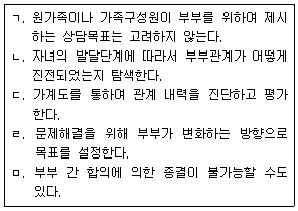
- ㄱ, ㄴ
- ㄱ, ㄷ, ㄹ
- ㄴ, ㄷ, ㄹ
- ㄴ, ㄷ, ㄹ, ㅁ
- ㄱ, ㄴ, ㄷ, ㄹ, ㅁ
(정답률: 알수없음)
75. 가족상담 이론가와 관련 기법의 연결로 옳지 않은 것은?
- 미누친(S. Minuchin) - 모방
- 매더네스(C. Madanes) - 가장(위장) 기법
- 화이트(M. White) - 불변의 처방
- 스튜어트(R. Stuart) - 유관계약
- 사티어(V. Satir) - 원가족 삼인군 치료
(정답률: 알수없음)
76. 구조적 가족상담의 주요 기법을 나열한 것으로 옳은 것은?
- 가계도, 기적질문, 외재화
- 증상을 과장하기, 유지, 추적
- 증상에 초점 맞추기, 예외질문, 증상 처방
- 빙산 탐색, 불변의 처방, 순환질문
- 긴장고조 기법, 가족조각, 코칭
(정답률: 알수없음)
77. 가족상담 개념에 관한 설명으로 옳은 것을 모두 고른 것은?
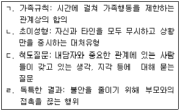
- ㄱ, ㄴ
- ㄱ, ㄷ
- ㄴ, ㄷ
- ㄴ, ㄹ
- ㄷ, ㄹ
(정답률: 알수없음)
78. 다음 상황에서 사용한 가족상담 기법은?
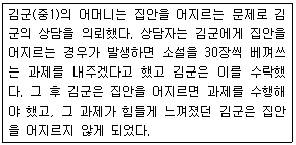
- 추적
- 은유 과제
- 가장(위장) 기법
- 증상 처방
- 고된 체험(시련) 기법
(정답률: 알수없음)
79. 다음의 개념을 모두 포함하는 가족상담 모델의 상담목표로 옳은 것은?
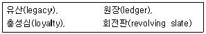
- 가족의 성장
- 가족의 재구조화
- 증상 제거 및 현재의 행동 변화
- 책임과 권리 간 공정한 균형과 관계 공평성
- 부정적 행동의 소거와 긍정적 행동의 증가
(정답률: 알수없음)
80. 전략적 가족상담의 상담자 역할에 관한 설명으로 옳은 것을 모두 고른 것은?
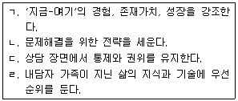
- ㄱ, ㄴ
- ㄴ, ㄷ
- ㄱ, ㄴ, ㄷ
- ㄴ, ㄷ, ㄹ
- ㄱ, ㄴ, ㄷ, ㄹ
(정답률: 알수없음)
81. 가족상담의 사정에 관한 설명으로 옳지 않은 것은?
- 동적 가족화는 가족구성원 간 역동성을 사정한다.
- 언어적 보고만을 통해 수집한 가족에 대한 정보는 정확하지 않을 수 있다.
- 가계도를 통하여 세대 간 유사점과 차이점 등을 파악한다.
- 가족조각은 신체적 표현 등을 통해 가족관계를 가시적으로 사정한다.
- 면접은 상호작용하는 연쇄과정의 추적이 불가능하다.
(정답률: 알수없음)
82. 구조적 가족상담의 수퍼비전에 관한 설명으로 옳지 않은 것은?
- 가족의 구조 변화를 위해 어떻게 효율적으로 접근했는지 본다.
- 가계도를 통하여 가족구성원 간 경계 등을 탐색하도록 한다.
- 가족구성원이 보여주는 사고와 행동에서 구조 패턴을 보도록 한다.
- 가족구조를 파악하기 위하여 행동을 관찰하게 할 필요는 없다.
- 가족의 잘못된 구조 패턴을 발견하고 이를 해결하기 위해 새로운 구조 패턴을 탐색하게 한다.
(정답률: 알수없음)
83. 한국의 문화적 특성을 고려한 가족상담에 관한 설명으로 옳지 않은 것은?
- 한국 가족문화에 적합한 가족상담 모델을 개발한다.
- 핵가족에게 영향을 미치는 확대가족과의 상호작용을 고려한다.
- 서구 이론적 관점의 기준보다 한국의 가족 현실에 기반을 둔 진단 및 사정도구를 개발한다.
- 한국의 전통적인 가족문제 해결방식과 현대 가족상담과의 접목을 시도한다.
- 전통적 성역할 고정관념과 가부장적 가치관이 부부 상호작용과 가족 기능에 미치는 영향을 무시한다.
(정답률: 알수없음)
84. 다음에서 상담자가 시도하고 있는 개입 기법은?
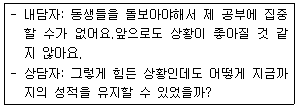
- 대처질문
- 척도질문
- 예외질문
- 기적질문
- 상담 전 변화 질문
(정답률: 알수없음)
85. 박양(중2)은 가정폭력 피해 문제로 상담을 받게 되었다. 다음의 상담 상황에서 상담자의 개입으로 옳지 않은 것은?
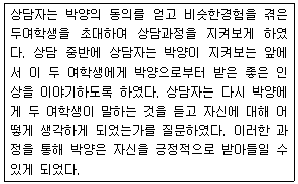
- 박 양과 문제를 분리시키는 전략을 구사하였다.
- 박 양의 긍정적 정체성을 강화시키고자 하였다.
- 두 여학생을 외부증인으로 활용하였다.
- 박 양의 지배적 이야기를 해체시키고자 하였다.
- 박 양에게 대안적 이야기를 구축할 수 있도록 하였다.
(정답률: 알수없음)
86. 최 양(고1)은 부모의 이혼으로 외할머니와 살고 있었는데, 최근 아버지가 재혼하면서 재혼가정에 합류하게 되었다. 가족 적응의 문제로 상담을 받게 된 최 양에 대한 접근 방식으로 옳지 않은 것은?
- 친어머니에 대한 충성심 갈등을 다룰 수 있도록 돕는다.
- 새로운 가족체계에 대한 두려움을 수용해준다.
- 가족경계선을 재구조화시키도록 돕는다.
- 새로운 가족에 적응하도록 외할머니와의 관계를 단절하도록 한다.
- 친어머니와 함께 사는 가족이 정상이라는 생각에 집착하지 않도록 돕는다.
(정답률: 알수없음)
87. 청소년기 자녀가 있는 가족상담에서 상담자의 개입으로 옳은 것은?
- 청소년의 또래집단 행동에 대해서 초점을 맞추지 않아도 된다.
- 청소년기 자녀가 부모로부터 분화를 시도하는 것은 권장하지 않는다.
- 비행청소년의 가족상담에서는 또래의 특성 및 놀이문화, 학교생활, 지지체계 및 생태환경 등도 파악해야 한다.
- 청소년들의 진로문제는 다루지 않고 가족문제에 집중해야 한다.
- 청소년기 자녀와 부모의 갈등은 다루지 않는다.
(정답률: 알수없음)
88. 청소년 자녀와 함께하는 가족상담으로 옳은 것을 모두 고른 것은?
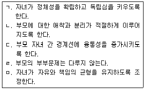
- ㄱ, ㄴ
- ㄱ, ㄷ
- ㄴ, ㄷ, ㄹ
- ㄱ, ㄴ, ㄷ, ㅁ
- ㄱ, ㄴ, ㄷ, ㄹ, ㅁ
(정답률: 알수없음)
89. 정군(중2)은 자신의 의사와는 무관하게 게임중독 문제로 어머니에 의해 상담에 의뢰되었다. 해결중심 단기치료에서의 상담자-내담자 관계 유형을 고려한 정군의 첫회기 개입으로 옳은 것을 모두 고른 것은?
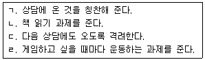
- ㄱ, ㄴ
- ㄱ, ㄷ
- ㄴ, ㄷ
- ㄴ, ㄷ, ㄹ
- ㄱ, ㄴ, ㄷ, ㄹ
(정답률: 알수없음)
90. 다음 사례에 대한 가족상담 개입으로 옳지 않은 것은?
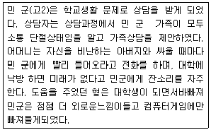
- 부모님의 갈등에 민 군이 끼어들게 되는 삼각관계를 해체시킨다.
- 민 군과 어머니는 밀착시키고 민 군과 형은 분리시킨다.
- 가족조각을 활용하여 민 군이 다른 가족구성원에게 느끼는 내적 정서 상태를 탐색한다.
- 어머니의 주장이 민 군을 짓누르는 지배적 이야기가 될 수 있음을 인식시킨다.
- 가족들의 의사소통을 점검하여 일치형의 의사소통을 하도록 돕는다.
(정답률: 알수없음)
4과목: 학업상담
91. 학습과진아와 학습부진아의 특성을 비교하는 설명으로 옳지 않은 것은?
- 학습과진아는 학업 지향적인 반면, 학습부진아는 사회 지향적이다.
- 학습과진아는 대인관계에 무관심한 반면, 학습부진아는 대인관계에서 적응적이다.
- 학습과진아는 불안이 덜한 반면, 학습부진아는 상대적으로 불안수준이 높은 편이다.
- 학습과진아는 목표에 대해 현실적인 반면, 학습부진아는 목표에 대해 비현실적이다.
- 학습과진아는 자신을 수용하고 낙관적인 반면, 학습부진아는 자기 비판적이고 부적절감을 가진다.
(정답률: 알수없음)
92. 능력과 성취의 불일치 준거에 의한 학습부진아의 설명으로 옳은 것은?
- 잠재력에 비하여 학업성취수준이 현격하게 뒤떨어지는 아동
- 특수교육 대상자로 판별되고, 정치(placement)된 아동
- 지적능력의 저하로 인하여 학업성취가 뒤떨어지는 아동
- 성취수준을 집단별로 구분하면 하위집단에 속하는 아동
- 국가적ㆍ지역적으로 규정된 학년, 학기의 학습목표를 달성하지 못하여 뒤쳐지는 아동
(정답률: 알수없음)
93. 두뇌의 우반구와 연관된 기능을 모두 고른 것은?
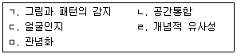
- ㄱ, ㄴ
- ㄱ, ㄴ, ㄷ
- ㄷ, ㄹ, ㅁ
- ㄱ, ㄴ, ㄷ, ㅁ
- ㄱ, ㄷ, ㄹ, ㅁ
(정답률: 알수없음)
94. 크랩(A. Krapp), 하이디(S. Hidi), 레닝거(K. Renninger)의 흥미에 관한 설명으로 옳은 것을 모두 고른 것은?
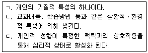
- ㄱ
- ㄴ
- ㄱ, ㄴ
- ㄴ, ㄷ
- ㄱ, ㄴ, ㄷ
(정답률: 알수없음)
95. 학습과 관련된 정의적 영역의 주요 요인을 모두 고른 것은?
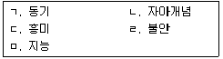
- ㄱ, ㄷ
- ㄴ, ㄹ, ㅁ
- ㄱ, ㄴ, ㄷ, ㄹ
- ㄴ, ㄷ, ㄹ, ㅁ
- ㄱ, ㄴ, ㄷ, ㄹ, ㅁ
(정답률: 알수없음)
96. 다음과 같은 연구결과를 제시한 학자는?
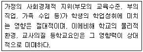
- 콜먼(J. Coleman)
- 하이더(F. Heider)
- 데시(E. Deci)와 라이언(R. Ryan)
- 로크(E. Locke)와 라뎀(G. Lathem)
- 마이켄바움(D. Meichenbaum)과 굿맨(K. Goodman)
(정답률: 알수없음)
97. 로젠샤인(B. Rosenshine)과 스티븐스(R. Stevens)의 교사 피드백 유형과 관련하여, 다음에 제시된 피드백의 형태로 옳은 것은?
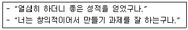
- 수행
- 동기
- 귀인
- 보상
- 전략
(정답률: 알수없음)
98. 학습과 관련된 심리검사에 관한 설명으로 옳은 것을 모두 고른 것은?
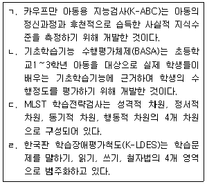
- ㄱ, ㄴ
- ㄴ, ㄷ
- ㄷ, ㄹ
- ㄱ, ㄴ, ㄷ
- ㄱ, ㄷ, ㄹ
(정답률: 알수없음)
99. 지적장애(정신지체)에 관한 설명으로 옳은 것은?
- 지적기능이 매우 낮아서 기본적으로 학습이 불가능하다.
- 지적장애 아동은 정상아동에 비해 인지적 능력은 낮지만 사회성 기술은 차이가 없다.
- 경도 지적장애 아동은 사회성 교육을 적절하게 받을 경우 독립적 생활이 가능하다.
- 중년기에 시작되는 경우도 있다.
- 지능검사에서 IQ 85이하 일 때, 지적장애로 판정된다.
(정답률: 알수없음)
100. 비언어성 학습장애의 특징으로 옳은 것을 모두 고른 것은?
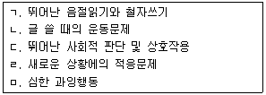
- ㄱ, ㄷ
- ㄴ, ㄷ, ㄹ
- ㄱ, ㄴ, ㄹ, ㅁ
- ㄴ, ㄷ, ㄹ, ㅁ
- ㄱ, ㄴ, ㄷ, ㄹ, ㅁ
(정답률: 알수없음)
101. K-WISC-Ⅳ의 소검사에 관한 설명으로 옳은 것은?
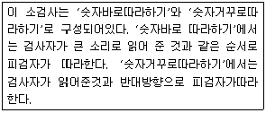
- 순차연결
- 행렬추리
- 산수
- 숫자
- 역방향 읽기
(정답률: 알수없음)
102. 실버(A. Silver), 하긴(R. Hagin), 듀언(D. Duane)이 제시한 학습문제의 원인에 관한 설명으로 옳지 않은 것은?
- 학습자 개인의 영역은 맥락적, 인지적, 정의적 요인으로 구분된다.
- 낮은 지능, 낮은 정보처리 속도 및 정확도, 비효율적인 공부방법 등이 포함된다.
- 우울, 불안, 스트레스 등과 관련된 심리적 문제도 포함된다.
- 부모의 양육태도, 학습에 대한 기대 등이 포함된다.
- 내담자가 맺고 있는 친구관계, 교사와의 관계, 재학 중인 학교 및 학원의 특성 등이 포함된다.
(정답률: 알수없음)
103. 국립특수교육원에서 실시하는 학습장애아동의 선별에 관한 설명으로 옳지 않은 것은?
- 학습장애아동은 기억력이 떨어져 지시사항을 적절히 수행하지 못한다.
- 시각장애, 청각장애, 정신지체, 정서장애, 문화적 기회 결핍 등에 의해 학력이 지체된 아동은 학습장애에서 제외한다.
- 학습장애아동은 읽기를 할 때 낱말을 빠뜨리거나, 다른 말로 바꾸어 읽거나, 앞뒤 낱말을 바꾸어 읽는다.
- 학습장애아동은 쓰기를 할 때 글자를 앞뒤, 상하로 바꾸어 쓰거나, 읽을 수 없을 정도의 난필로 쓴다.
- 학습장애아동은 -1 표준편차 이상의 정상적인 지능을 지니고 해당 학년수준에서 2년 이상 성취가 지체된 아동을 말한다.
(정답률: 알수없음)
104. 댄서로우(D. Dansereau)의 학습전략 중 주전략에 해당하는 것을 모두 고른 것은?
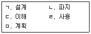
- ㄱ, ㄷ
- ㄴ, ㄹ
- ㄱ, ㄴ, ㄹ
- ㄴ, ㄷ, ㄹ
- ㄷ, ㄹ, ㅁ
(정답률: 알수없음)
1⑤. 반복시연 학습전략을 자발적으로 사용하기 시작하는 연령대는?
- 5세 이전
- 6∼7세
- 11∼12세
- 15∼16세
- 18∼19세
(정답률: 알수없음)
106. 노박(J. Novak) 등이 주장한 개념도의 교육적 활용 가능성으로 옳지 않은 것은?
- 교사의 교수활동을 돕는다.
- 학습자가 이미 알고 있는 것을 탐구한다.
- 어떤 글이나 내용들로부터 의미를 추출하는데 도움이 된다.
- 앞으로 학습할 방향과 최종 목표점을 알려주는 학습의 안내자 역할을 한다.
- 관련 없는 두 개 이상의 물건을 연결하여 아이디어를 산출하는데 유용하다.
(정답률: 알수없음)
107. 자기조절학습의 요소 중 '시연과 기억'에 관한 학습자의 행동으로 옳은 것은?
- 시험 후 스스로 점수를 채점한다.
- 글을 쓰기 전에 대체적인 윤곽을 잡는다.
- 공부할 때 중요한 내용은 공책에 기록한다.
- 공부 중에 모르는 것이 있으면 참고자료를 찾는다.
- 시험 준비할 때 내용을 알 때까지 반복적으로 쓴다.
(정답률: 알수없음)
108. 초인지전략의 결함에 관한 설명으로 옳은 것을 모두 고른 것은?
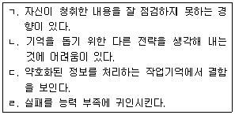
- ㄱ, ㄴ
- ㄴ, ㄷ
- ㄱ, ㄷ, ㄹ
- ㄴ, ㄷ, ㄹ
- ㄱ, ㄴ, ㄷ, ㄹ
(정답률: 알수없음)
109. 논리적으로 조직된 형태가 아닌 자료를 암기할 때, 사용할 수 있는 전략을 모두 고른 것은?
- ㄱ, ㄴ
- ㄴ, ㄷ
- ㄱ, ㄷ, ㄹ
- ㄴ, ㄷ, ㄹ
- ㄱ, ㄴ, ㄷ, ㄹ
(정답률: 알수없음)
110. 로빈슨(H. Robinson)의 SQ3R에 관한 설명으로 옳은 것을 모두 고른 것은?
- ㄱ, ㄴ
- ㄷ, ㄹ
- ㄱ, ㄴ, ㄷ
- ㄱ, ㄴ, ㄹ
- ㄴ, ㄷ, ㄹ
(정답률: 알수없음)
111. 독해전략의 하위전략 중 학습자가 점검하는 자기점검전략의 질문으로 옳지 않은 것은?
- 읽기의 목적을 분명히 알고 있는가?
- 자료를 소리 내어 반복하고 있는가?
- 중요한 내용에 주의를 기울이고 있는가?
- 지나간 내용 중 중요한 부분을 잘 기억하고 있는가?
- 읽기 자료의 내용과 사전 지식을 잘 연결시키고 있는가?
(정답률: 알수없음)
112. 드 보노(de Bono)가 개발한 '인지사고 프로그램' 중 다음의 기법은?
- 체크리스트
- PMI(Plus-Minus-Interesting)
- 브레인스토밍
- 강제관련법
- 가치내면화
(정답률: 알수없음)
113. 브레인스토밍을 사용할 때 권장해야 할 사항으로 옳지 않은 것은?
- 아이디어에 대한 비판은 잠정적으로 보류한다.
- 자유분방하게 아이디어를 낼 수 있도록 권장한다.
- 많은 수의 아이디어가 나오도록 독려한다.
- 진행자는 더 좋은 아이디어를 위해 중간에 한번씩 내용을 정리한다.
- 누군가 제시한 좋은 아이디어를 기초로 더 발전된 아이디어를 내도록 권장한다.
(정답률: 알수없음)
114. 학업상담에 온 내담자 어머니의 호소를 듣고 상담자가 가장 먼저 취할 수 있는 접근방법으로 옳은 것은?
- 현재 성취 수준에 대한 수용 촉진
- 선수학습의 개선
- 성공경험 확대하기
- 학습전략 습관화하기
- 지능검사를 통한 자신감 회복
(정답률: 알수없음)
115. 시험불안에 대한 개입방법으로 효과가 있다고 알려진 것을 모두 고른 것은?
- ㄱ, ㄴ
- ㄴ, ㄷ
- ㄱ, ㄴ, ㄷ
- ㄱ, ㄷ, ㄹ
- ㄱ, ㄴ, ㄷ, ㄹ
(정답률: 알수없음)
116. 발표불안의 원인으로 옳은 것을 모두 고른 것은?
- ㄱ, ㄴ
- ㄴ, ㄷ
- ㄴ, ㄹ
- ㄱ, ㄴ, ㄷ
- ㄱ, ㄴ, ㄹ
(정답률: 알수없음)
117. 학습부진 영재아에 관한 설명으로 옳은 것은?
- 완벽주의적 성향의 학생은 경쟁적인 상황을 즐긴다.
- 창의적인 학습부진 영재아는 단순 암기에 오랜 시간을 집중한다.
- 형제가 모두 영재아일 때, 학습부진 영재아는 다른 형제의 영향을 받지 않는다.
- 학습에서의 실패 경험으로 파괴적 행동, 낮은 자기효능감 등의 문제를 보이기도 한다.
- 학급에서 지나친 경쟁은 자아존중감이 낮은 학습부진 영재아에게 별다른 영향을 주지 않는다.
(정답률: 알수없음)
118. ADHD에 관한 설명으로 옳지 않은 것은?
- 복합형, 주의력결핍 우세형, 과잉행동-충동 우세형의 세 하위유형으로 구분된다.
- 일반아동과 ADHD 아동의 가족에 대한 연구에서 유전적 소인에 관한 근거를 찾지 못했다.
- 과잉행동은 별로 나타나지 않지만, 부주의 문제를 주로 보일 때는 주의력결핍 우세형으로 진단된다.
- 부주의 행동 특성 9개와 과잉행동 및 충동성 특성 9개로 구성된 총 18개의 행동 증상을 통해 진단한다.
- 신경전달물질인 도파민과 노르에피네프린이 뇌의 특정부위에서 적게 나타나는 것이 ADHD 발생에 영향을 미치는 것으로 추정된다.
(정답률: 알수없음)
119. 데시(E. Deci)와 라이언(R. Ryan)의 자기결정성 이론 중 다음의 내담자 호소에 따른 동기 유형은?
- 내적 조절(internal regulation)
- 외적 조절(external regulation)
- 동일시된 조절(identified regulation)
- 통합된 조절(integrated regulation)
- 투입된 조절(introjected regulation)
(정답률: 알수없음)
120. 수학 학습에서 발생하는 문제와 정보처리 과정에 관한 설명으로 옳지 않은 것은?
- 단계의 순서를 잊어버리는 것은 주의문제에 해당한다.
- 작은 공간에서 수 쓰기 어려움은 운동 문제에 해당한다.
- 숫자 정렬의 어려움은 시공간적 처리 문제에 해당한다.
- 수를 세어서 합산하기의 어려움은 청각적 처리 문제에 해당한다.
- 수업시간 동안 주의 집중의 어려움은 주의 문제에 해당한다.
(정답률: 알수없음)
- "ㄱ": 진로상담을 통해 학생들은 자신의 능력과 성향을 파악할 수 있다. 이를 통해 자신이 어떤 일에 능하고 흥미를 가지는지를 알 수 있으며, 이는 적절한 진로 선택에 큰 도움이 된다.
- "ㄴ": 진로상담은 학생들이 선택할 수 있는 진로 옵션을 제시해준다. 이를 통해 학생들은 자신이 가진 능력과 성향에 맞는 진로를 선택할 수 있으며, 이는 미래에 대한 계획을 세우는 데 큰 도움이 된다.
- "ㄹ": 진로상담은 학생들이 선택한 진로에 대한 정보를 제공해준다. 이를 통해 학생들은 자신이 선택한 진로에 대해 더욱 깊이 있는 이해를 갖게 되며, 이는 진로에 대한 자신감을 높이는 데 큰 도움이 된다.